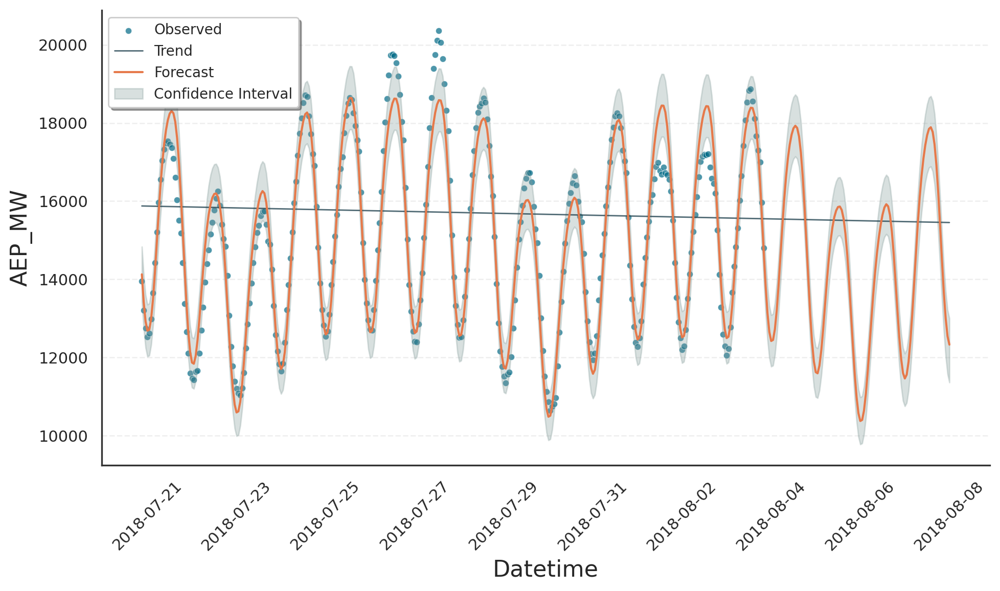

Events#
Conceptual Idea#
Gloria provides a flexible framework for representing events in your dataset. Imagine, for instance, a brief one-off dip in the data - just like the drop we saw in the modeling trends example between July 6th and 9th. Although we captured that behaviour by tweaking the trend component, describing it as an event is a more intuitive approach and becomes especially valuable when similar events repeat.
In Gloria, every event has two key parts:
Anchor: a reference instant that marks where the event is aligned in time. Anchors are managed through event regressors, namely
SingleEvent,IntermittentEvent,PeriodicEvent, andHoliday.Profile: the temporal shape that unfolds around each anchor. All profiles available in Gloria are of type Event and include
BoxCar,Gaussian,Cauchy, andExponential.
The figure illustrates the idea. In the first column you see SingleEvent instances that occur only once: each row shows a different profile (black solid line), all aligned to the same anchor time (red dashed vertical line).
You can place several anchors along the time axis - irregularly or at equal intervals - yielding the patterns in the second and third columns and corresponding to IntermittentEvent and PeriodicEvent, respectively. At every anchor, the same profile is stamped. Mathematically, the full signal is the convolution of one profile with the collection of anchor times.

Adding Event Regressors#
As mentioned, an event consists of an event regressor and an event profile attached to it. The snippet below builds a single‐occurrence event using the built-in SingleEvent regressor together with a three-day BoxCar profile:
from gloria import Gloria, BoxCar
# Define the event profile
event = BoxCar(width="3d") # three-day flat pulse
# Create a Gloria model
m = Gloria()
# Add event to model
m.add_event(
name="drop",
regressor_type="SingleEvent", # choose the regressor class
event=event, # attach the profile
t_start="2018-07-06 9:00:00" # anchor time
)
The add_event() method takes the profile via event=event and selects the regressor with regressor_type="SingleEvent". Any further arguments required by that regressor - in this case the anchor time t_start - are passed as keyword parameters.
The following script is a full example modelling the drop in the power consumption dataset using the event we just created. Note that compared to the modeling trends section we turned off changepoints using n_changepoints=0:
import pandas as pd
from gloria import Gloria, BoxCar
# Load the data
data = pd.read_csv("data/AEP_hourly.csv")
# Save the column names for later usage
timestamp_name = "Datetime"
metric_name = "AEP_MW"
# Convert to datetime
data[timestamp_name] = pd.to_datetime(data[timestamp_name])
# Restrict data
window_duration = 400
window_start = 800
data = data.sort_values(by="Datetime").iloc[
-window_start : -window_start + window_duration
]
# Set up the Gloria model
m = Gloria(
model="gamma",
metric_name=metric_name,
timestamp_name=timestamp_name,
sampling_period="1 h",
n_changepoints=0,
)
# Add observed seasonalities
m.add_seasonality("daily", "24 h", 2)
m.add_seasonality("weekly", "7 d", 2)
# Create the event profile
event = BoxCar(width="3d")
# Add event to model with desired event regressor
m.add_event(
name="drop",
regressor_type="SingleEvent",
event=event,
t_start = "2018-07-06 9:00:00"
)
# Fit the model to the data
m.fit(data)
# Predict
prediction = m.predict(periods=1)
# Plot
m.plot(prediction)
In the figure below the fit reproduces the observed drop convincingly. The only visible artefact is a small jump at the event’s onset. This stems from the boxcar profile’s infinitely sharp leading edge; replacing it with a flat-top Gaussian profile with order > 1 smooths the edge and removes the discontinuity.
{kind=link}
Recurring Events#
Besides modelling single-occurrence events with SingleEvent, Gloria offers specialised regressors for recurring patterns:
IntermittentEventfor events that repeat at irregular times, by passing the complete list of anchor timestampsPeriodicEventfor events that repeat on a fixed period, by specifying any anchor time plus the periodHolidayfor country- and region-specific public holidays.
Tip
Holiday is Gloria’s analogue to Prophet’s holiday component, but it is more flexible: you may attach any event profile, whereas Prophet is limited to 1-day boxcars. See the CalendricData protocol as well as our calendric data tutorial on configuring Gloria models similar to Prophet.
The next example shows how to capture the regular weekend drop in power consumption discussed in Basic Usage. We omit the weekly seasonality term and instead insert a PeriodicEvent that places a Gaussian profile at the midpoint of each weekend.
import pandas as pd
from gloria import Gloria, Gaussian
# Load the data
data = pd.read_csv("data/AEP_hourly.csv")
# Save the column names for later usage
timestamp_name = "Datetime"
metric_name = "AEP_MW"
# Convert to datetime
data[timestamp_name] = pd.to_datetime(data[timestamp_name])
# Restrict data
data = data.sort_values(by = "Datetime").tail(336)
# Set up the Gloria model
m = Gloria(
model="gamma",
metric_name=metric_name,
timestamp_name=timestamp_name,
sampling_period="1 h",
n_changepoints=0,
)
# Add observed seasonalities
m.add_seasonality("daily", "24 h", 2)
# m.add_seasonality("weekly", "7 d", 2) # <-- weekly component removed
# Create the event profile
event = Gaussian(width="18h")
# Add event to model with desired event regressor
m.add_event(
name="drop",
regressor_type="PeriodicEvent", # <-- periodic event regressor
event=event,
t_start = "2018-07-29 5:00:00", # <-- midpoint of weekend
period = "7d" # <-- weekly period
)
# Fit the model to the data
m.fit(data)
# Predict
prediction = m.predict(periods=100)
# Plot
m.plot(prediction, dpi = 200)
The fit confirms that a periodic event regressor can mimic seasonal structure in both training data and forecast. This approach is especially useful when the seasonality is too intricate to approximate with a small number of Fourier components.
{kind=link}